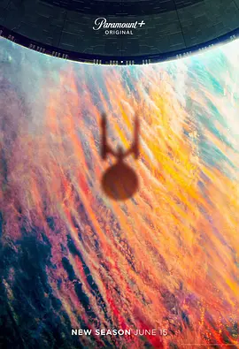

8.6
星际迷航：奇异新世界 第二季
Star Trek: Strange New Worlds Season 2
2023
美国
评分 8.6
导演:
克里斯·费舍
演员:
安松·蒙特 / 丽贝卡·罗梅恩 / 伊森·派克 / 克里斯蒂娜·钟 / Izad Etemadi
类型:
冒险,动作,科幻
剧情简介
在第二季中，USS Enterprise 再次启航，舰长 Christopher Pike 引领船员迈向更加崎岖未知的星海。一次又一次的新世界等待他们去发现，而每一个星球背后，都潜藏着未知文明、伦理冲突与情感波澜。随着探索的脚步加快，船员们的“职务”之外，也迎来了更深层的自身试炼。副指挥官 Una Chin‑Riley 面临法庭审判，因为她的“改造身份”成为星际舰队内部无法回避的焦点。与此同时，科学官 Spock 与护理长 Christine Chapel 的情感张力逐渐浮现，友谊与忠诚的界限被模糊。而在一次使命中，船员们意外卷入与传说中蜥蜴族生命体「Gorn」的冲突，这场危机不仅考验他们的战术，也撼动了联盟的未来。整季风格多变：从法庭政治的沉思，到星际幽默的跨界，再到首次登场的乐曲形式——舰员在“子空间”（Subspace）中唱出心声，也在静默飞船桥中数算牺牲与责任。与此同时，舰队令、代号任务与信念之间的矛盾悄然升温。派克在暗影中犹豫，为了救援被劫持的同伴、为了守护企业号的信条，他必须面对“是否越级执行”的道德重压。夜以继日的航行中，船员们彼此依靠也彼此碰撞。荧幕上的太空战斗、灵光一闪的星球遨游、闪烁的星际桥段背后，每个人都在问：自己为何出发？自己为何信任？而当企业号再次驶向那尚未命名的星系，答案也许并不在目的地，而在他们共同迈出的那一步。